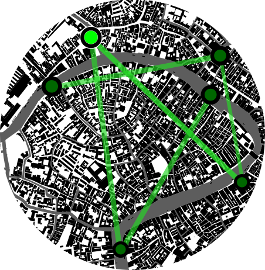

Reservoirs of Venice explores the city as a medium for information processing, using its physical systems to model and predict environmental changes. Inspired by the field of physical reservoir computing, which leverages dynamic physical processes for self-learning systems, the project envisions Venice as a data source and computational agent that predicts its future.
We present a "water computer" that learns from human activity, gleaned from the spatio-temporal patterns of Venice's water surfaces. During the exhibition, the installation will learn to interpret its activity resulting from human movement and environmental conditions, and to predict the time of day. Unlike energy-intensive digital AI systems, this computer is composed of the very elements it computes with, and requires only a fraction of the energy to operate.
The work critically engages with urban computing by moving beyond traditional data-centric paradigms. Historically, urban computing has focused either on digital systems - relying on sensors and control networks - or on models that use physical analogies to understand urban dynamics. Reservoirs of Venice proposes a third paradigm in which physical processes are used to transform information, rather than serve as analogies.

The waters of Venice are a canvas that records human activity and environmental conditions.

Physical reservoir computing uses such natural phenomena to predict future states.The installation models a city-wide computer, using Venice as a data source and computational agent
Design & Creative Team:
Jesus Ocampo Aguilar, Paula Martin Rivero, Sebastian Gonzalez Quintero
Technical support:
Joel Murphy
Supported by:
Österreichisches Bundesministerium für Kunst, Kultur, öffentlicher Dienst und Sport
College of Arts Media and Design, Northeastern University
MAI International GmbH
@iloveyouvenice youtube webcam channel
We are thankful for our conversations with Ling-Wei Kong, Cornell University